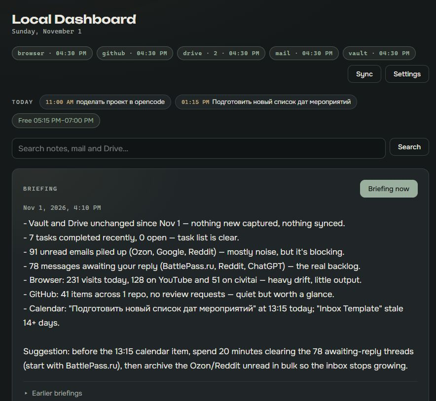
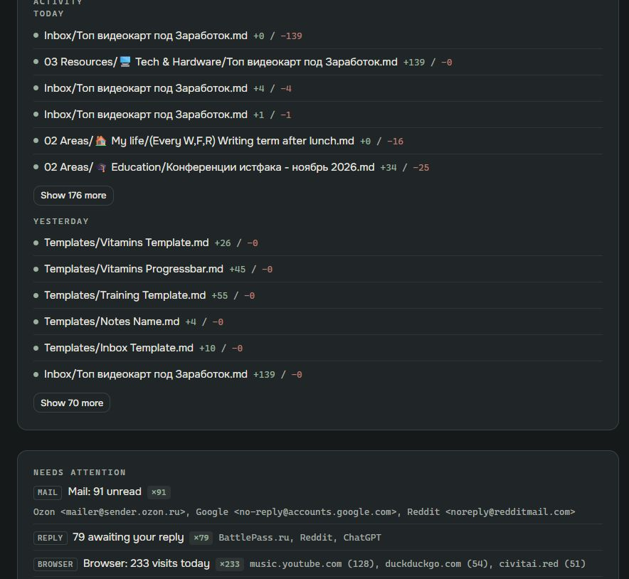
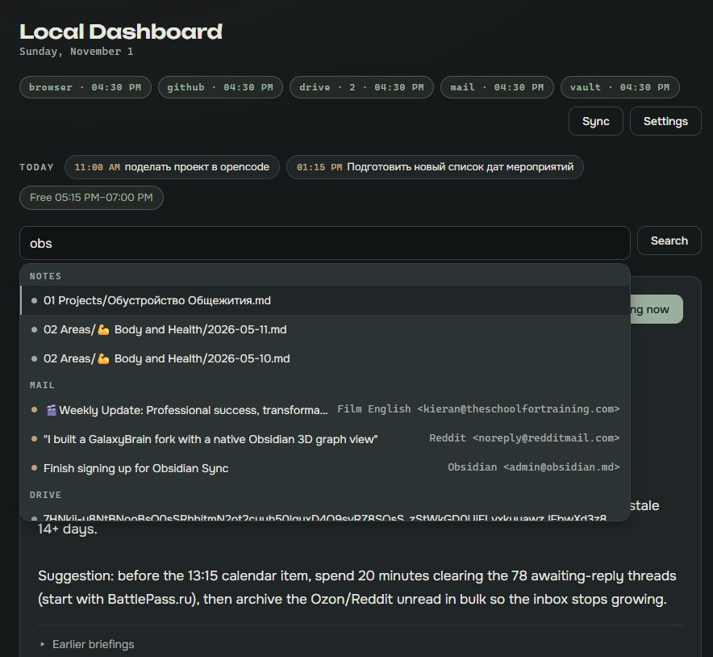
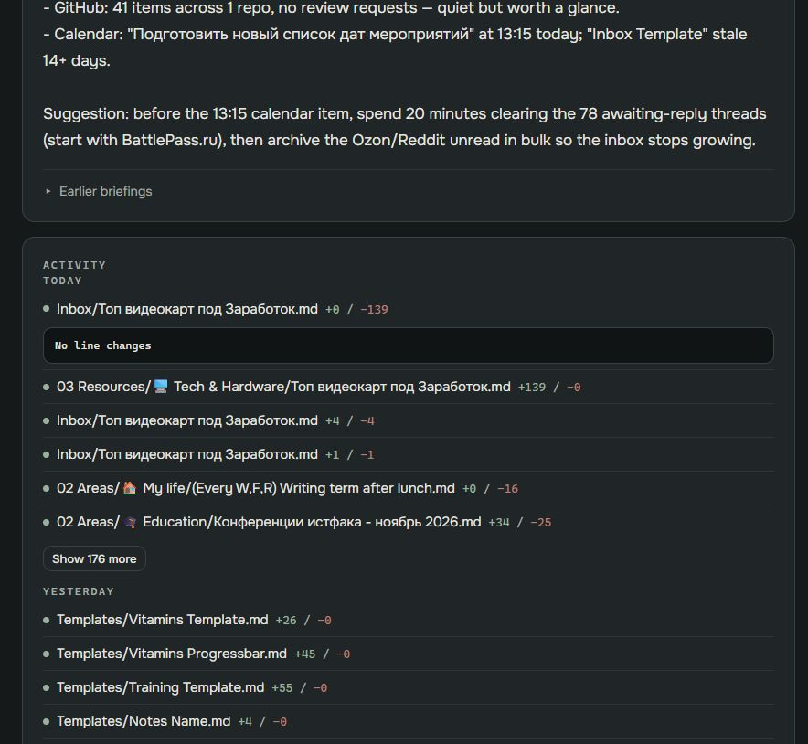
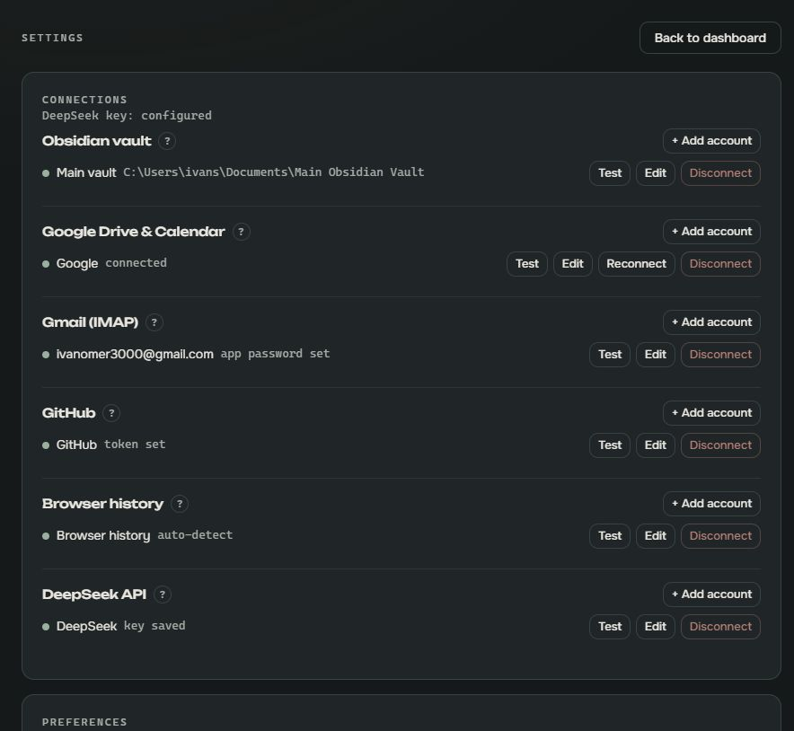
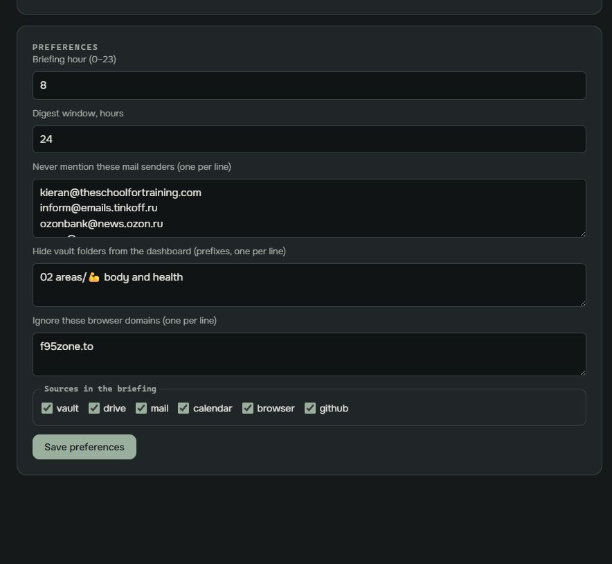
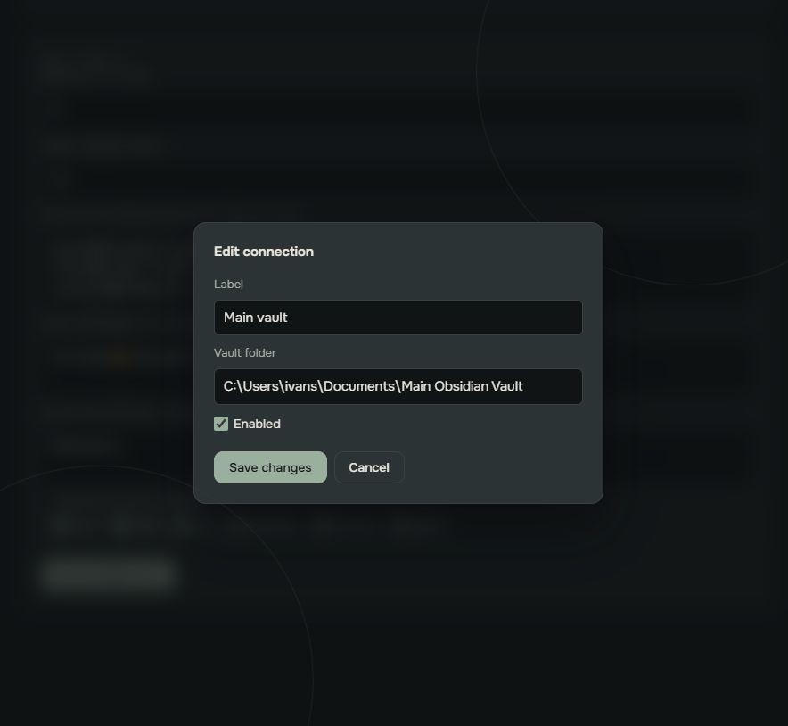
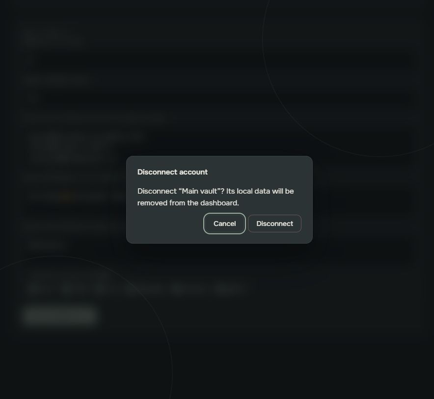

Local Dashboard — current screens
All screens at 884 px window width with Unbounded/Onest typography. Dark only; tilt-shift motion is live in the app.

Dashboard — header, status pills, today strip, search, briefing hero.

Activity — six rows per day, “Show N more”, attention queue below.

Search — notes, mail and Drive suggestions with keyboard-active row.

Diff — note change expanded under the row.

Settings — connections grouped by service with hints.

Preferences — digest window, exclusions, source toggles.

Modal — edit connection, blurred backdrop, focus trap.

Confirm — destructive action with its own dialog.